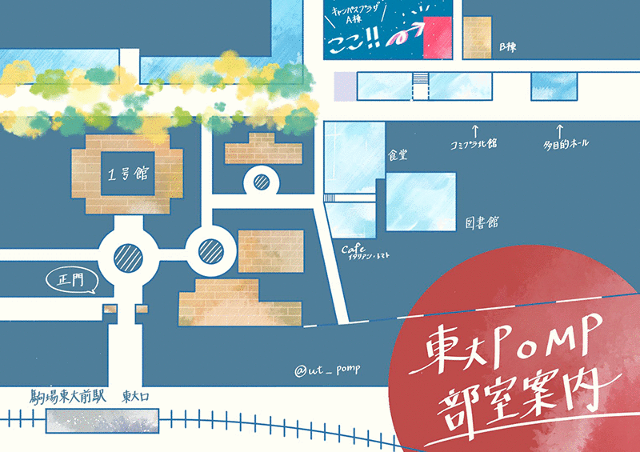

活動場所

部室はキャンパスプラザA棟3階305号室にあります。
各種アンプ、キーボード、ドラムセット、各種パーカッション、ミキサー、マイクなどの機材が多数揃っており、
いつでも練習やセッションなどが可能です。
Web 上のカレンダーを用いてバンド練習や個人練習の予約をするシステムです。
部室の主な機材の一覧
・ギターアンプ
Roland JC-120Fender SuperSonic
Fender Twin Reverb
Hughes＆Kettner TRIAMP + Orange
・ベースアンプ
SWR MEGOLIATH 8x10 + Hartke・キーボード周り
Roland RD-700・ドラムセット
Pearl Reference(BD22',TOM10',12',13',FloorTOM16')スネア:Pearl Masters Custom6.5インチ
ライド、クラッシュ×2、チャイナ、スプラッシュ、ハイハット:Zildjian
ツインペダル
・パーカッション類
コンガ、ボンゴ、ティンバレス、カウベル、タンバリン複数、ウィンドチャイム、シェイカー多数、ジャムブロック×2、ドラム練習パッド、etc...
・ミキサー周り
ミキサー:YAMAHA MG16/6FX、スピーカ:JBL EON10G2、マイク多数